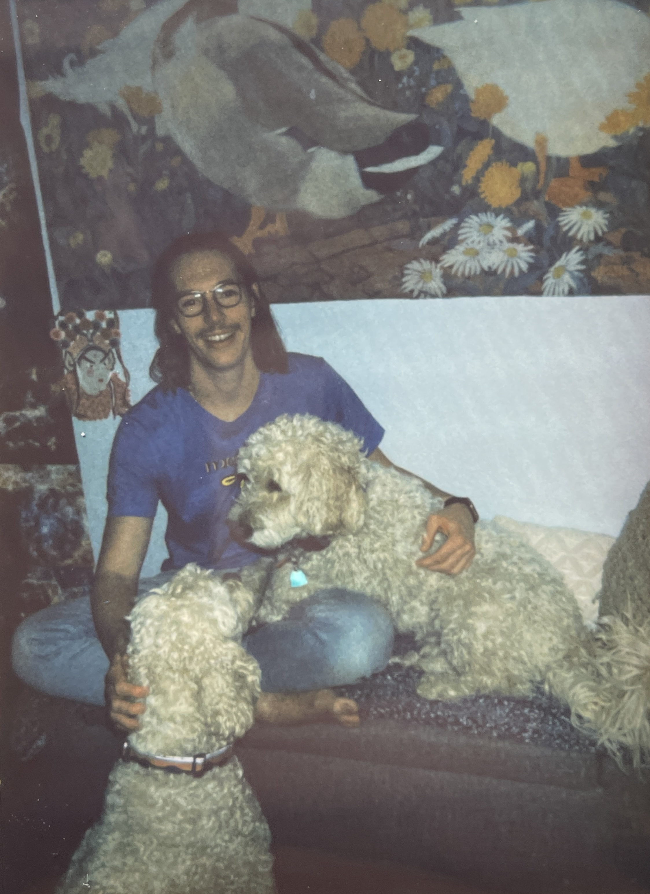

I am now practicing to achieve enlightenment. (Although paradoxically, enlightenment is not the goal. If one has the goal of enlightenment, one will not become enlightened.)
I recommend for everyone to adopt a meditation practice. 10 minutes of daily practice is a great place for beginners to start. The Waking Up app by Sam Harris is a tremendous introductory tool which I strongly recommend.
Time is a finite resource, but time is wasted when attention is not paid to the present. A busy but productive day at work (however rare that may be!) generally feels much better than a Saturday spent absentmindedly watching Seinfeld in your pajamas. That's quite remarkable, especially given how good Seinfeld is. In the first scenario, you actually have no time, or at least no free time. In the second scenario, you have all day to yourself. Yet the productive workday somehow feels better? The true difference between the scenarios is not time, rather it is attention! (Note that the more you pay attention, the more productive work days you will have.)
Next time you do dishes, pay attention. Next time you walk to a coffee shop, be aware of the experience. Don't bump music or listen to a podcast or have a YouTube video playing in the background. Try also to avoid getting lost in your thoughts. Actually pay attention to what you're doing. It's quite remarkable what you might observe.
Recently I had a cold shower and observed that the water, experientially speaking, was not truly "cold". Cold is a concept which we use to describe a rather broad category of similar sensations. But "cold" is not the sensations themself. Instead, paying close attention, the objectively cold water resulted in a type of acute sensation wherever it touched my skin, and I was observing these sensations directly, without any obfuscating lens. Paying close enough attention, you can begin to separate concept from experience. Pretty dank if you ask me.
When I was 22 I went to Kaua'i during American Thanksgiving. I stayed at a hostel. There was a South American man staying there at the same time as me who was deep into Eastern philosophy. I was not yet a student of Buddhism and I had hardly begun my meditation practice, so I was effectively unexposed to any of his ideas. Some of it was mumbo-jumbo (e.g. I was feeling slightly under the weather because my "chakras were not in balance"), but some of it was pretty legit. We spent some hours together over the course of my stay.
When I was leaving for the mainland, I was bidding farewell to a table of hostel dwellers, this man included. He said, "I love you." I knew that he meant it in an Eastern philosophical way, not in a sexual or romantic way. But I still couldn't bring myself to return the sentiment. Now that I profoundly realize that I love everyone, I understand exactly what he meant. To whomever is reading this, I love you.
Fiction
Non-Fiction
Spiritual